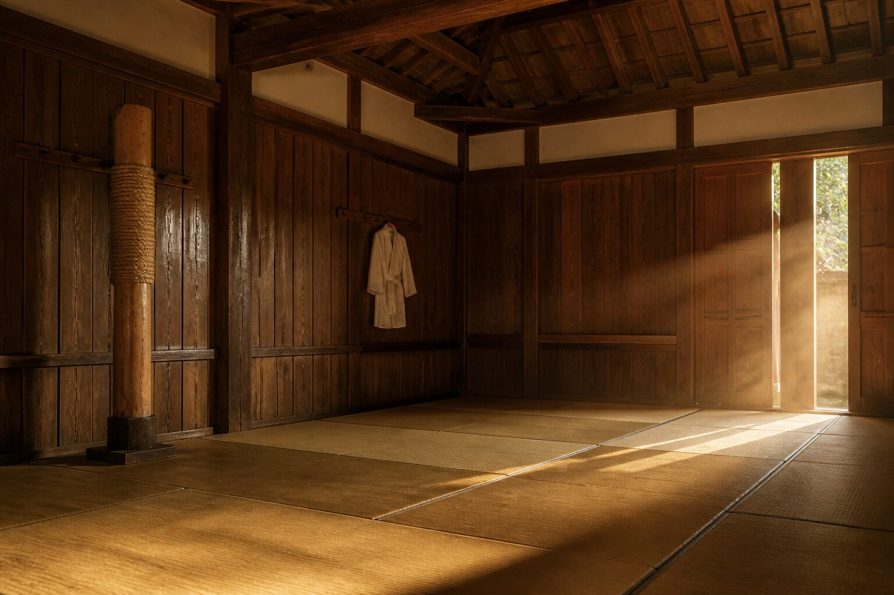
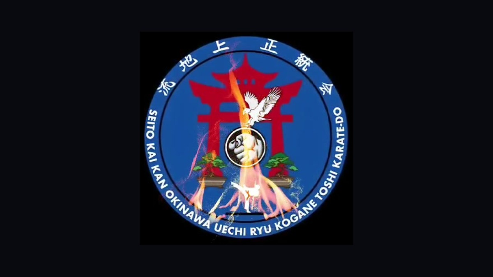

Karate-Do tradicional
Enseñanza de karate-do tradicional, con el sello de una escuela que lleva décadas formando alumnos.
Consultar ↗
Karate-Do tradicional · Santiago y la región
Escuela de karate-do tradicional Kogane Toshi. Seito Kai Kan Okinawa Uechi Ryu, con clases en varios lugares de la región y en Santiago.
01 / Escuela
Una escuela de karate-do para quienes buscan disciplina, respeto y una línea clara de Okinawa.
Enseñanza de karate-do tradicional, con el sello de una escuela que lleva décadas formando alumnos.
Consultar ↗Línea Seito Kai Kan Okinawa Uechi Ryu Kogane Toshi Karate-Do.
Consultar ↗Hay clases en Santiago. Escríbenos y te decimos el lugar más cercano para empezar.
Consultar ↗También se dictan clases en varios lugares de la región. Coordinamos por WhatsApp.
Consultar ↗02 / Cómo empezar
El primer paso es WhatsApp. Desde ahí te orientamos según dónde estás.
Cuéntanos si buscas clases en Santiago o en la región, y si es para ti o para alguien de la familia.
Te indicamos el lugar más cercano y cómo coordinar la primera visita.
Conoces la escuela, el estilo y el ritmo de la clase, con 45 años de enseñanza detrás.
03 / Tradición

04 / Preguntas frecuentes
05 / Contacto
Escríbenos ahora y te decimos dónde hay clase cerca, en Santiago o en la región.
Hablemos por WhatsApp ↗